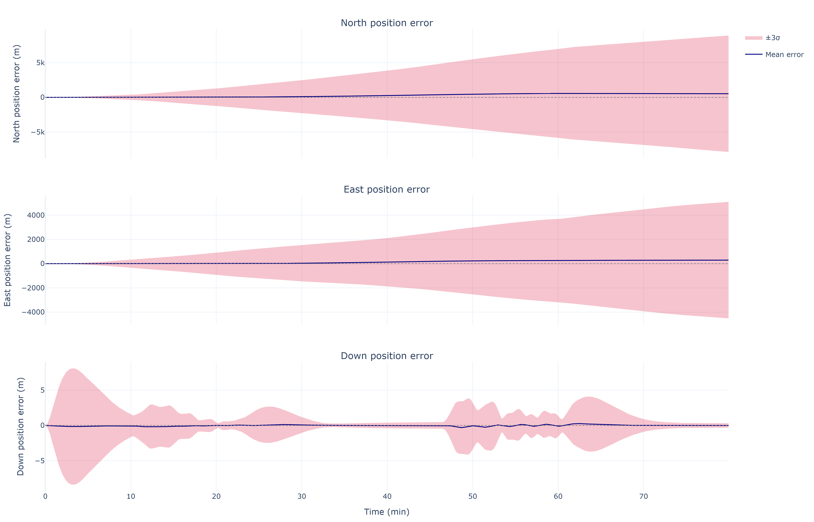
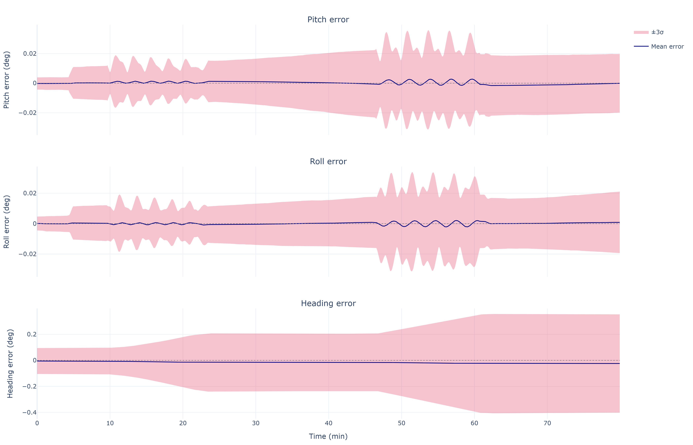

Theory & Math
This page documents the physics and mathematics as implemented in the simulator, with pointers to the modules that carry each formulation. Symbols: geodetic latitude \(\phi\), longitude \(\lambda\), altitude \(h\); NED navigation frame \(n\); body frame \(b\); body-to-NED rotation \(\mathbf{C}_b^n\).
WGS-84 Earth model
Module: ins_sim/core/earth_model.py
| Constant | Symbol | Value |
|---|---|---|
| Semi-major axis | \(a\) | 6 378 137.0 m |
| Flattening | \(f\) | 1 / 298.257223563 |
| First eccentricity² | \(e^2 = f(2-f)\) | 6.694379990e−3 |
| Earth rotation rate | \(\omega_{ie}\) | 7.2921151467e−5 rad/s |
The radii of curvature at latitude \(\phi\):
where \(R_N\) (prime-vertical) governs east-west motion and \(R_M\) (meridian) governs north-south motion.
Earth rate and transport (craft) rate resolved in NED, both evaluated at the current state on every integration step:
Gravity
Normal gravity on the ellipsoid follows the Somigliana formula,
with a linear free-air altitude correction as implemented:
This first-order correction (\(\partial g/\partial h \approx -2g/a\)) is accurate to about 1 µg below 10 km — well under the navigation-grade accelerometer bias — so the higher-order \(f\), \(m\), and \(h^2\) terms of the full formula are deliberately omitted. The local gravity vector is \(\mathbf{g}^n = [0,\, 0,\, +g(\phi,h)]^T\) (Down positive).
Strapdown mechanization
Module: ins_sim/navigation/strapdown.py (strapdown_navgrade)
The mechanization integrates the classic NED navigation equations. In continuous form:
Discretely, each step \(k \to k+1\) performs:
- Evaluate \(\boldsymbol{\omega}_{ie}^n\), \(\boldsymbol{\omega}_{en}^n\), and \(g(\phi,h)\) at the current state.
- Form the body rate relative to the navigation frame: \(\boldsymbol{\omega}_{nb}^b = \boldsymbol{\omega}_{ib}^b - \mathbf{C}_n^b\left(\boldsymbol{\omega}_{ie}^n + \boldsymbol{\omega}_{en}^n\right)\).
- Attitude — advance by the exact rotation-vector exponential rather than a first-order DCM update: the implementation stores attitude as a scalar-last quaternion and right-multiplies by \(\exp\!\left([\boldsymbol{\omega}_{nb}^b\,\Delta t\,\times]\right)\), which is exactly the solution of the DCM differential equation above for a constant rate over the step.
- Resolve specific force into NED: \(\mathbf{f}^n = \mathbf{C}_b^n\mathbf{f}^b\).
- Velocity — forward-Euler step of the velocity equation, including the Coriolis term \(\left(2\boldsymbol{\omega}_{ie}^n + \boldsymbol{\omega}_{en}^n\right)\times\mathbf{v}^n\).
- Position — forward-Euler step of the geodetic rates.
The forward-Euler scheme is chosen deliberately to match the truth-side IMU
derivation: feeding the truth \(\boldsymbol{\omega}_{ib}^b, \mathbf{f}^b\)
back through the mechanization reproduces the truth trajectory (the
zero-noise self-consistency check in main.py).
IMU stochastic error model
Module: ins_sim/sensors/imu.py (generate_imu_samples)
Each sensor triad's measurement is, per axis:
| Term | Model | Drawn |
|---|---|---|
| \(\mathbf{M}\) | Scale factor on the diagonal, six independent misalignment angles off-diagonal | once per trial |
| \(\mathbf{b}_r\) | Turn-on bias repeatability, \(\mathcal{N}(0, \sigma_{BR}^2)\) | once per trial |
| \(\mathbf{b}_{d,k}\) | Bias instability: first-order Gauss-Markov | every sample |
| \(\boldsymbol{\eta}_k\) | ARW/VRW white noise | every sample |
The Gauss-Markov drift uses the exact discrete AR(1) form, which keeps the steady-state variance \(\sigma_{BI}^2\) independent of the sample rate:
The white-noise standard deviation per sample is \(\sigma_\eta = \mathrm{ARW}/\sqrt{\Delta t}\) (VRW for the accelerometer), which makes the integrated angle (velocity) uncertainty grow as \(\mathrm{ARW}\cdot\sqrt{t}\) independent of the sample rate.
Each trial also draws an initial-alignment error: NED tilt and azimuth misalignments applied to the truth attitude, \(\mathbf{R}_0 = \exp([\boldsymbol{\delta}\times])\,\mathbf{R}_{0,\text{true}}\) with \(\boldsymbol{\delta} = [\delta_N, \delta_E, \delta_D]\). Physically the tilts are limited by accelerometer bias over \(g\) and the azimuth by the gyrocompass limit, east-gyro bias over \(\omega_{ie}\cos\phi\).
INS error dynamics
Schuler oscillation
Horizontal position/velocity/tilt errors are coupled through gravity and the Earth's curvature into the Schuler loop: a tilt error \(\delta\theta\) misresolves gravity into horizontal acceleration \(g\,\delta\theta\), while the resulting position error re-tilts the computed local level by \(\delta p / R\). The result is a bounded oscillation with
visible as the dominant period in the North/East error channels:

Vertical channel
The vertical channel is unstable in a free-inertial mechanization. Perturbing the altitude equation through the free-air gravity gradient gives
an exponential divergence with e-folding time \(\sqrt{R/2g} \approx 570\) s (≈9.5 min). Uncheck Baro altitude aiding in the GUI to observe it.
With aiding enabled, the INS-minus-baro altitude residual drives a third-order damping loop acting on altitude, vertical velocity, and an integral state that absorbs steady vertical accelerometer error:
which places a triple pole at \(s = -1/\tau\) — characteristic polynomial \((s + 1/\tau)^3\) — with \(\tau = 100\) s by default: well-damped, no residual oscillation, and steady accelerometer bias rejected by the integrator.
Monte Carlo error characterization
Module: ins_sim/evaluation/monte_carlo.py
The simulator characterizes navigation error empirically: \(N\) independent trials each draw their own turn-on biases, scale factor/misalignment matrices, Gauss-Markov histories, white-noise streams, and initial-alignment error, run the full nonlinear mechanization, and the ensemble is summarized statistically:
- ±3σ bands (attitude/velocity/position tabs): the pointwise ensemble mean and standard deviation of each error component — the diagonal of the empirical covariance
- Percentile envelopes: the pointwise \(q\)-th percentile of radial error across trials — the 95th percentile drives the 3D error tube and the map envelope.
- CEP (Circular Error Probable): the pointwise 50th percentile of horizontal radial error, with a linear drift-rate fit over the first hour.
Ensemble statistics converge as \(1/\sqrt{N}\); the tails (95th percentile) converge more slowly than the median, so CEP stabilizes at lower trial counts than the error tube.

Not a linearized covariance analysis
The simulator propagates no linearized error-state model — there is no 15-state \(\dot{\delta\mathbf{x}} = \mathbf{F}\delta\mathbf{x} + \mathbf{G}\mathbf{w}\) system or analytic covariance in the codebase. Every statistic above comes from full nonlinear Monte Carlo trials. Implementing the linearized model (and eventually Kalman-filter-based aiding, e.g. GNSS/INS) and validating it against these empirical bounds is natural future work.